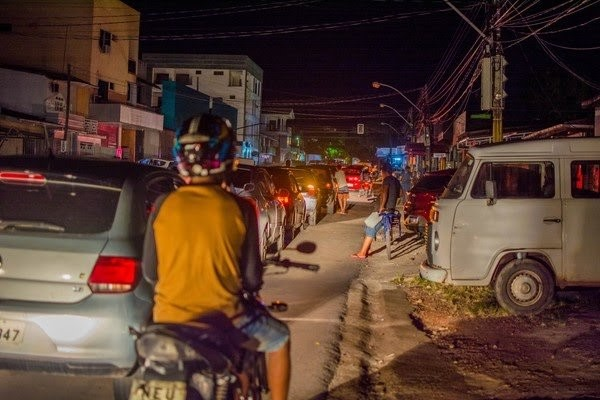

Apagón en Amapá.
Blackout Afecta a 13 de los 16 municipios del Estado.
El apagón comenzó el 3 de noviembre de 2020 y llegó a varios de los municipios del estado, incluida la capital, Macapá. Este hecho comenzó después de un incendio En muchos de los Transformadores sustentadoras distribución en energía. El grupo Gemini Energy, es la empresa responsable de la línea de transmisión Amapá.
Apagón en el centro de Macapá - Foto: Maksuel Martins / Fotoarena / Estadão Contenido
Según testimonios, ante del colapso eléctrico, la empresa responsable buscó ingenieros y especialistas, para solucionar algunas fallas en los transformadores. Cerca de 765 mil personas se encuentran sin electricidad, con dificultades en las telecomunicaciones, Sufriendo pérdidas en el comercio y enfrentando colas en las estaciones de servicio. Ha habido más de 70 protestas contra el apagón. Neuciane Lima vive en el barrio de Buritizal, en las afueras de la capital Macapá. Ella fue una de las personas que participó en la protesta realizada el martes pasado (10), cuando el apagón completó 7 dias. Además del problema con la falta de energía eléctrica en el estado, los ciudadanos dicen que la inseguridad pasa a formar parte de su vida diaria.
Actualizado 11/11/2020.
Blackout no Amapá
Blackout atinge 13 dos 16 municípios do Estado.
O apagão começou no dia 3 de novembro de 2020 e atingiu vários municípios do estado, incluindo a capital Macapá. Este fato começou após um incêndio em muitos dos Transformadores que sustentavam a distribuição de energia. O grupo Gemini Energy é a empresa responsável pela linha de transmissão do Amapá.
Segundo depoimentos, antes do colapso elétrico, a empresa responsável buscava engenheiros e especialistas para solucionar algumas falhas nos transformadores. Cerca de 765 mil pessoas estão sem energia elétrica, com dificuldades nas telecomunicações, sofrendo perdas no comércio e enfrentando filas nos postos. Já houve mais de 70 protestos contra o apagão. Neuciane Lima mora no bairro do Buritizal, na periferia da capital Macapá. Ela foi uma das pessoas que participou do protesto realizado na última terça-feira (10), quando o apagão completou 7 dias. Além do problema com a falta de energia elétrica no estado, os cidadãos afirmam que a insegurança passa a fazer parte do seu dia a dia.
Tradução do texto.
Atualizado 11/11/2020.
Aluno(a): Jônatas Araújo Costa